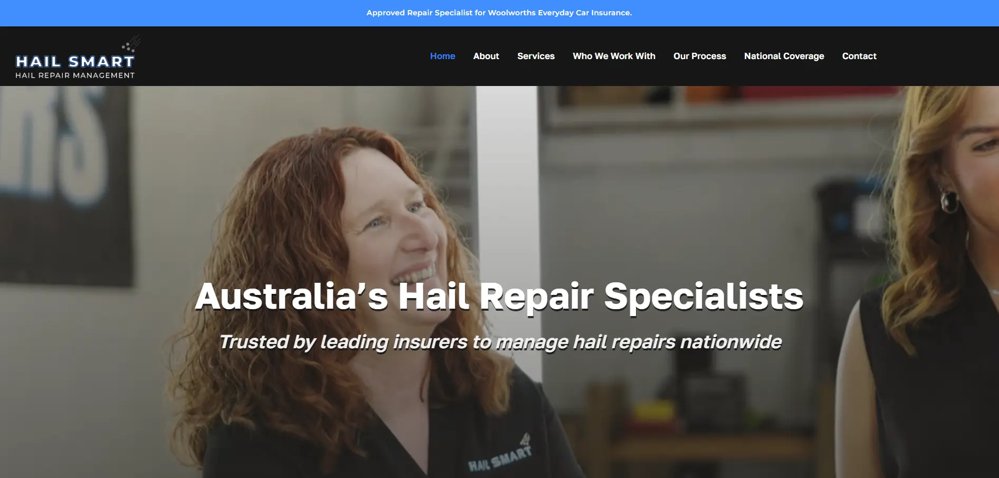
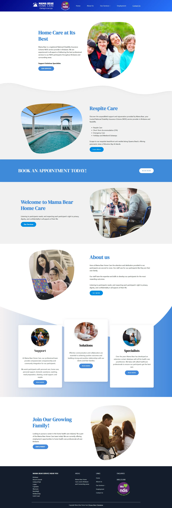
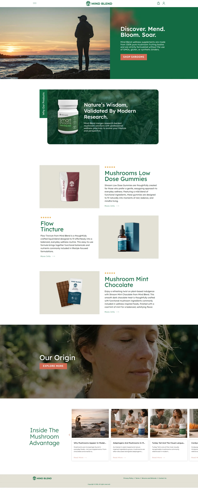

Websites that fit
Custom themes, responsive interfaces, and WordPress sites built around your content and business needs.
Independent developer · WordPress & beyond
I’m Israil Parajes. I turn business requirements into maintainable websites and custom systems, from the first build to the next improvement.
01 / Selected work

WordPress Platform Development
WordPress platform development with custom plugin functionality and a focus on performance.
Visit Hailsmart ↗
Custom Development
Custom WordPress development using ACF and a bespoke theme for a home care business.
Visit Mama Bear Home Care ↗
WooCommerce Development
WooCommerce development for an online store, with performance as a delivery focus.
Visit Mindblend ↗02 / How I can help
Custom themes, responsive interfaces, and WordPress sites built around your content and business needs.
Custom plugins, WooCommerce workflows, and API integrations that connect your website with the tools you use.
Performance optimization, maintenance, and deployment support to keep your website moving forward.
Have something in mind?
A new website, a custom feature, or a system that needs a little attention.